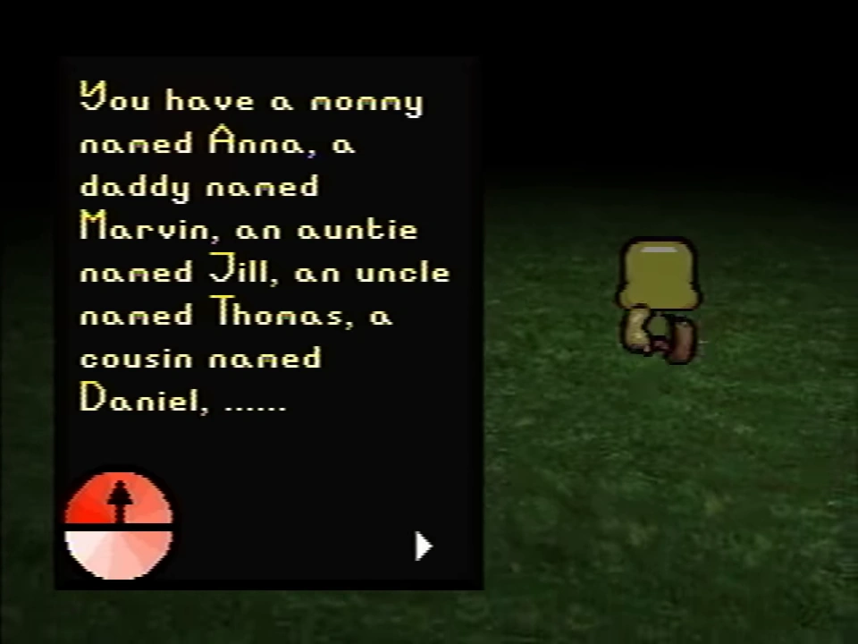

A text box listing Carrie Mark's relatives in Petscop 17
The "family" refers to a related group of people, presumably consisting of the Mark, Hammond and Leskowitz families, and possibly Paul. "The family" is occasionally used in contexts that imply that it is only referring to select parts of an overall family, and sometimes used to refer to all of the family.
Most of the family appears to be connected to the events depicted within Petscop, some of which even being depicted or quoted directly within the game.
At some point in the series, Paul is contacted by the family. While it is implied that other members of the family also communicated with Paul, only Jill is mentioned directly. Later, Paul passes ownership of the channel to the people who had contacted him previously, sometime between Petscop 6 and Petscop 7. In Petscop 14, he refers to the channel as "the family YouTube."
Care (also known as Carrie Mark) is a crucial figure in the family, and has major involvement with the events that Petscop appears to address. During recordings shown in Petscop 17, a text box directed towards Care lists several people who are related to her, including "a mommy named Anna, a daddy named Marvin, an auntie named Jill, an uncle named Thomas," and "a cousin named Daniel." Her traits are in the "face system" and she has a room in the Child Library.
Marvin also appears on numerous occasions throughout the series primarily depicted as an in-game character. He is Care's father and, outside of the game, one of the individuals that the game appears to be mainly directed towards.
Anna is Care's mother, and is mentioned a few times in game.
Lina Leskowitz is Anna's sister and is mentioned a few times in-game. Her traits are in the "face system" and she has a room in the Child Library.
Michael Hammond is mentioned in-game on some occasions. A grave for him is depicted in the grave room, and he was listed in the Book of Baby Names. Anna is mentioned to be Mike's aunt in the note at the end of the Book of Baby Names. His traits are in the "face system" and he has a room in the Child Library.
Jill is the presumed leader of the part of the family that is managing the channel. Paul has mentioned on multiple occasions calling her, or her calling him, to discuss the game and other information, such as in Petscop 14 and Petscop 22.
Daniel is Care's cousin. In an older generation of Even Care, as shown in Petscop 19 through recordings of Mike, picking up an egg mentions "Daniel's game".
Paul is implied to be at minimum associated with the family; his mother seems to be associated with them, he mentions in Petscop 11 not seeing any of them since 1999, was in attendance at a birthday party where Rainer was present, and has been mentioned to have a close resemblance to Care. On multiple occasions from both in-game text and Paul's commentary, it is implied that having a "room" in-game (and therefore having traits in the "face system") is indicative of being part of "the family", and Paul mentions Petscop 11 that he found his "room". It is also highly theorized his surname is Leskowitz, mainly in part to the main instance of Petscop being publicised was from a Reddit account named u/paleskowitz (which, out of universe, has been confirmed to be an official account of the series creator).
Rainer, the creator of the Petscop game, has a high likelihood to be part of the family. At minimum, he is closely involved with it. When Care went missing, he helped the family search for her. When Marvin had been kicked out of the house, Anna asked for Rainer's help to paint the walls and look after Care. Multiple channel descriptions note Rainer visiting on Christmas in some years to give "gifts" to the family, and Paul mentions him being at a birthday party at one point that was highly suggested to be a birthday party related to the family. Large portions of Petscop were also created by Rainer to address the family.
The "Tiara Leskowitz" mentioned on the note in the locker in the school is likely to have some relation to the family due to having the surname Leskowitz.
When the in-game Tiara (referred to as "Belle") approaches the Child Library in recordings shown in Petscop 12, the notes mention that she is "not family", and that because of this, her facial features were not included in the "face system".
During Petscop 22, Paul comments towards Belle that she "isn't family," which she seems to take offense to. At the end of the soundtrack, after Belle says the word "friend," the player corrects it to "family."
The channel managers use black boxes in post-editing to censor the completed versions of the Caskets in footage. Rainer notes the following about the Caskets, in regards to witnessing their completed versions:
Anybody who sees them is sure to become part of the family.
| People | Paul · Belle · Carrie · Marvin · Rainer · Anna · Mike · Lina · Jill · Daniel |
|---|---|
| Characters | Guardian · Amber · Pen · Randice · Roneth · Toneth · Wavey · Care · Tiara |
{kind=link}
{kind=link}